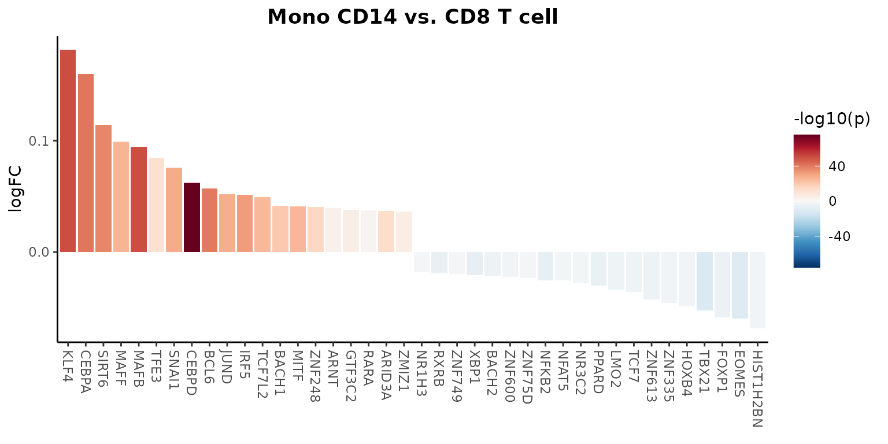
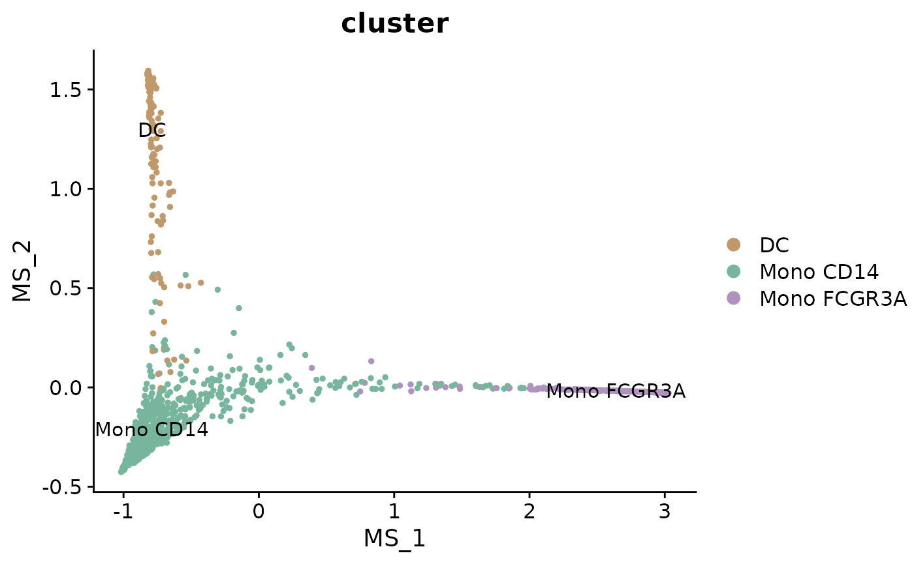
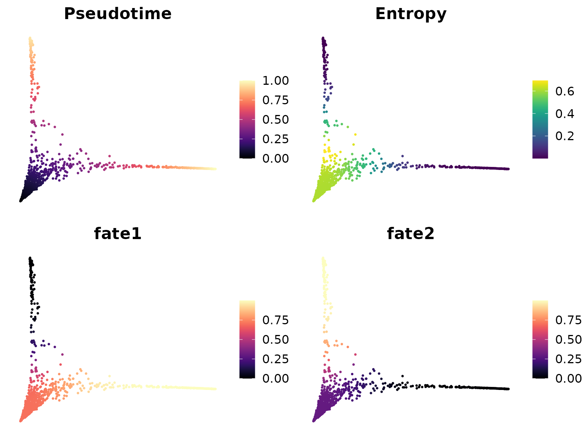
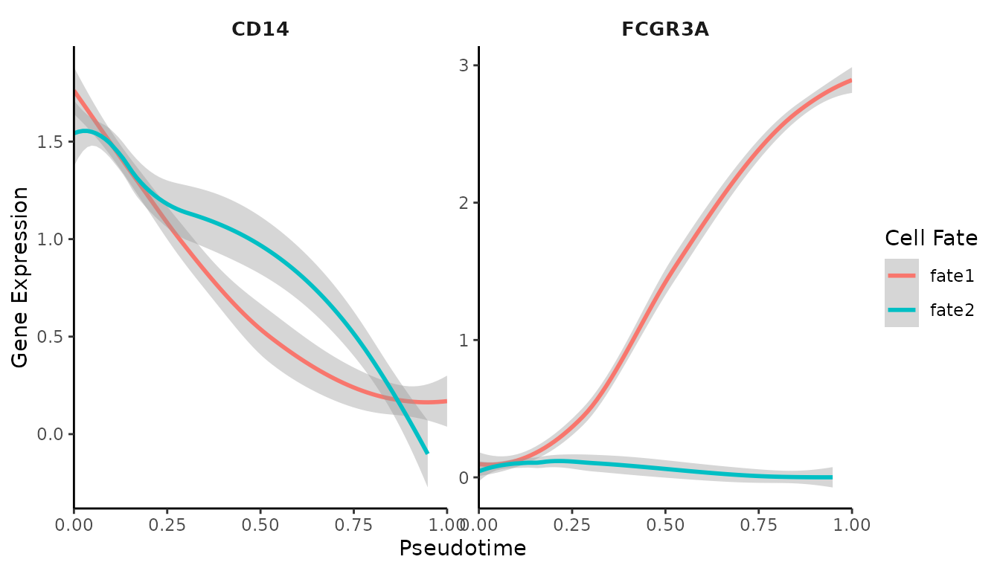
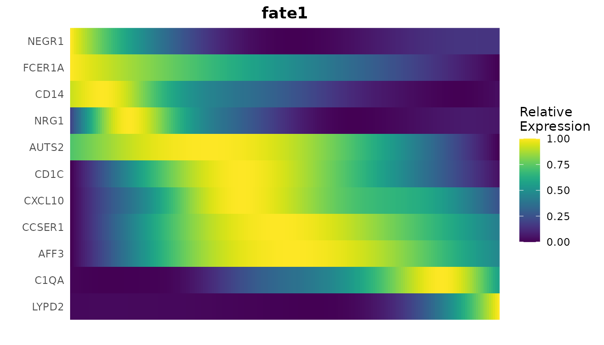
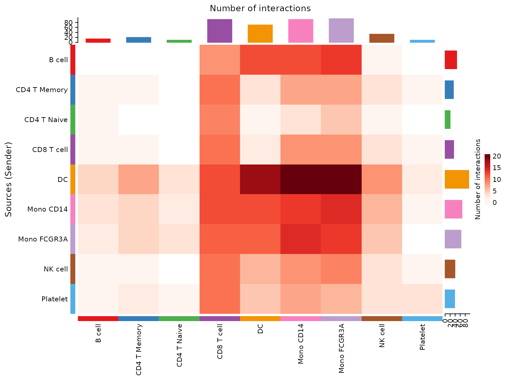
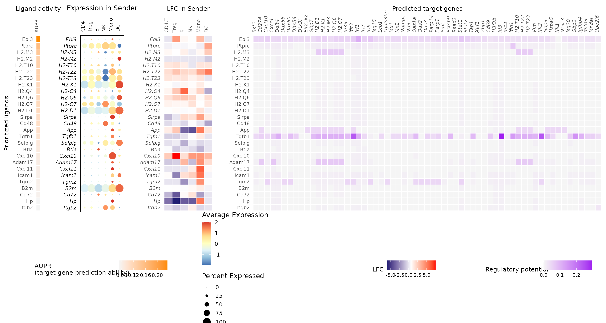
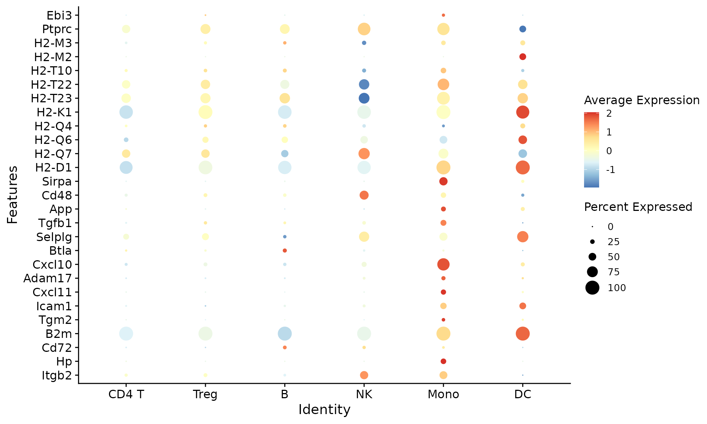

Lesson 6: Advanced scRNA-seq Analytical Methods (Part 1)
Yichao Hua
2024-11-29
6.Advanced.RmdIntroduction
In this lesson, we’ll explore advanced analytical methods for single-cell RNA sequencing data. These techniques provide deeper insights into cellular processes, regulatory networks, and cell-cell interactions. While some of these operations may be time-consuming and might not be performed in real-time during the class, we provide tutorials and explanations for each method to facilitate your independent exploration after the course.
This lesson will cover the following topics:
- Gene Regulatory Network Analysis: SCENIC
- Trajectory Analysis: scVelo and Palantir
- Label Transfer: singleCellNet
- Cell-Cell Communication: CellChat and NicheNet
- Data Imputation: MAGIC
- Copy Number Variation Analysis: CopyKat
- TCR/BCR Analysis: scRepertoire
First, let’s set your working directory to where we’ll store all course materials. If you followed Lesson 1, this would be:
# Set working directory to the course folder created in Lesson 1
# If you used a different location, replace this path with your chosen directory
setwd("~/Documents/single-cell-course")1. SCENIC: Single-Cell Regulatory Network Inference and Clustering
SCENIC (Single-Cell Regulatory Network Inference and Clustering) is a powerful computational method that provides insights into the regulatory networks governing gene expression in single cells. It identifies transcription factors (TFs), their target genes, and their activity in individual cells.
Background
SCENIC was introduced in a Nature Methods paper and has become a valuable tool in single-cell analysis. The method consists of three main steps:
- Identification of co-expression modules using GENIE3 or GRNBoost
- Refinement of these modules based on enrichment of TF binding motifs (RcisTarget)
- Evaluation of the activity of each module in each cell (AUCell)
For optimal performance, it’s recommended to use the Nextflow pipeline to run SCENIC, which can be found here.
Importing SCENIC Results into Seurat
While SeuratExtend doesn’t currently include a
RunScenic function, it does provide tools to import and
analyze SCENIC results within the Seurat framework. Let’s start by
importing a pre-computed SCENIC loom file:
# Download the pre-computed SCENIC loom file
scenic_loom_path <- file.path(tempdir(), "pyscenic_integrated-output.loom")
download.file("https://zenodo.org/records/10944066/files/pbmc3k_small_pyscenic_integrated-output.loom",
scenic_loom_path, mode = "wb") # Use binary mode for Windows compatibility
# Use the example PBMC dataset from SeuratExtend package
pbmc <- SeuratExtend::pbmc
# Import SCENIC results into our Seurat object
pbmc <- ImportPyscenicLoom(scenic_loom_path, seu = pbmc)Examining SCENIC Outputs
SCENIC results are stored in seu@misc$SCENIC. Let’s take
a look at some of the key components:
# View the AUCell matrix (TF activity scores)
tf_auc <- pbmc@misc$SCENIC$RegulonsAUC
head(tf_auc[, 1:5])## AHR ARID3A ARNT ARNTL ATF1
## CTATAAGATCGTTT-1 0.01406902 0.03347861 0.000000000 0.1144568 0.016730526
## GTGATTCTGGTTCA-1 0.00000000 0.00000000 0.000000000 0.1730939 0.017191920
## ACGTTGGACCGTAA-1 0.00000000 0.03189382 0.000000000 0.1463286 0.003671087
## GGATACTGCAGCTA-1 0.02483910 0.01347068 0.006867406 0.0945589 0.016670344
## GATTCGGACAGGAG-1 0.00000000 0.03413893 0.000000000 0.1889417 0.008686232
## GCTCCATGCCGAAT-1 0.02917300 0.01637612 0.069730586 0.1855961 0.022648398The AUCell scores represent the enrichment of target genes for each TF in each cell, indicating regulon activity.
# View the list of TFs and their target genes
tf_gene_list <- pbmc@misc$SCENIC$Regulons
str(tf_gene_list, list.len = 10, max.level = 1)## List of 298
## $ AHR : chr [1:49] "NFYC-AS1" "MYSM1" "ZZZ3" "FUBP1" ...
## $ ARID3A : chr [1:24] "CDC7" "IL6R" "LAMC1" "LINC01136" ...
## $ ARNT : chr [1:6] "EPHB3" "SMIM14" "GPR68" "ANXA2" ...
## $ ARNTL : chr [1:9] "SLC4A10" "AP2M1" "EMC2" "PHF20L1" ...
## $ ATF1 : chr [1:79] "CAMK2N1" "PAFAH2" "BCAS2" "S100A13" ...
## $ ATF2 : chr [1:136] "SLC25A33" "LUZP1" "THRAP3" "FUBP1" ...
## $ ATF3 : chr [1:625] "AURKAIP1" "C1orf233" "DFFB" "MTOR" ...
## $ ATF4 : chr [1:73] "STX12" "MECR" "MAP7D1" "AKIRIN1" ...
## $ ATF6 : chr [1:24] "PER3" "PRKD3" "BMPR2" "ZFYVE28" ...
## $ BACH1 : chr [1:32] "SLC1A7" "SNX27" "QPCT" "DYSF" ...
## [list output truncated]Visualizing SCENIC Results
Now that we have integrated SCENIC data into our Seurat object, we can use various visualization tools to explore these regulatory networks.
Identifying Top Activated TFs in Each Cluster
Let’s create a heatmap to visualize the top activated TFs in each cluster:
tf_zscore <- CalcStats(tf_auc, f = pbmc$cluster, order = "p", n = 4, t = TRUE)
Heatmap(tf_zscore, lab_fill = "zscore")
This heatmap shows the relative activity (z-score) of top TFs across different cell clusters. Darker colors indicate higher activity.
Comparing TF Gene Expression Levels and Regulon Activity
We can compare the expression levels of TFs with their regulon activity:
DimPlot2(
pbmc,
features = c("ETS1", "ATF3", "tf_ETS1", "tf_ATF3"),
cols = list("tf_ETS1" = "D", "tf_ATF3" = "D"),
theme = NoAxes()
)
In these plots, “ETS1” and “ATF3” show the gene expression levels, while “tf_ETS1” and “tf_ATF3” show the regulon activity (AUCell scores).
Comparing Regulon Activity Between Cell Types
Let’s create a waterfall plot to compare regulon activity between two cell types:
# Set the default assay to "TF" for easier access to regulon activity
DefaultAssay(pbmc) <- "TF"
# Create a waterfall plot
WaterfallPlot(
pbmc,
features = rownames(pbmc), # Use all available TFs in the "TF" assay
ident.1 = "Mono CD14", # First group of cells
ident.2 = "CD8 T cell", # Second group of cells
exp.transform = FALSE, # Disable transformation of expression data
top.n = 20 # Display the top 20 most differentially active TFs
)##
## Attaching package: 'tidyr'## The following object is masked from 'package:reshape2':
##
## smiths## The following objects are masked from 'package:Matrix':
##
## expand, pack, unpack
This plot shows the differential activity of TFs between monocytes and CD8 T cells, highlighting key regulators that distinguish these cell types.
Advanced Visualization with Cytoscape
SCENIC outputs can be further visualized using tools like Cytoscape to create gene regulatory network diagrams. These visualizations can help in understanding the complex relationships between transcription factors and their target genes.
Figure: Gene regulatory networks predicted by SCENIC for Mono CD14 and Mono FCGR3A cell populations, with nodes colored by relative gene expression (round nodes) or regulon activity (square nodes).
2. Trajectory Analysis: scVelo and Palantir
Introduction to Trajectory Analysis
In single-cell RNA sequencing, trajectory analysis is a powerful approach to understand how cells change over time or during biological processes like differentiation. Instead of viewing cells as static entities, trajectory analysis allows us to capture the dynamic nature of cellular processes, revealing the paths cells take as they transition between different states.
Trajectory analysis can help answer questions such as: - How do stem cells differentiate into specialized cell types? - What are the intermediate states in a biological process? - Which genes drive the progression from one cell state to another?
In this lesson, we’ll explore two popular tools for trajectory analysis: scVelo and Palantir. These methods use different approaches to infer cellular trajectories and provide insights into cell fate decisions.
Setting Up the Python Environment
Before we begin, it’s important to note that while we’re working in
R, some of the tools we’ll use (scVelo and Palantir) are Python-based.
Normally, this would require switching between R and Python
environments, which can be challenging for beginners. However, the
SeuratExtend package has been designed to seamlessly
integrate these Python tools into our R workflow.
To make this integration possible, we use a tool called
reticulate, which allows R to interact with Python. We also
use conda, a package management system, to create a
specialized Python environment with all the necessary packages.
If you’ve never used conda or reticulate
before, you might need to install miniconda first. You can do this in R
with the following command:
reticulate::install_miniconda()Next, we need to create a conda environment with all the required Python packages.
Note: Before creating the conda environment, ensure that Git is installed on your system, as it’s required for installing certain Python packages:
- Windows: Download and install from Git for Windows
-
Mac: Install via Homebrew
(
brew install git) or Xcode Command Line Tools (xcode-select --install) -
Linux: Install using your package manager:
- Ubuntu/Debian:
sudo apt-get install git - Fedora:
sudo dnf install git - CentOS/RHEL:
sudo yum install git
- Ubuntu/Debian:
SeuratExtend provides a function to do this
automatically:
SeuratExtend::create_condaenv_seuratextend()This function will set up a conda environment named “seuratextend”
with all the necessary Python packages. You only need to run this once,
and SeuratExtend will automatically use this environment in
future sessions.
Note: This function automatically detects your operating system and sets up the environment accordingly. It is currently supported and tested on Windows, Intel-based macOS (not Apple Silicon/M1/M2), and Linux (Ubuntu 20.04) systems. Users with Apple Silicon devices who are interested in contributing to the development of M1/M2 support are welcome to reach out via GitHub Issues.
scVelo: RNA Velocity-based Trajectory Analysis
scVelo is a powerful tool for trajectory analysis that leverages RNA velocity information to predict cell fate and differentiation trajectories. RNA velocity is based on the ratio of unspliced to spliced mRNA, which can indicate the future state of cells.
Before running scVelo, we typically need to process our data with a tool called Velocyto, which quantifies spliced and unspliced mRNA. Velocyto usually needs to be run on a Linux server, which is beyond the scope of our in-class exercise. For this tutorial, we’ll use a pre-computed Velocyto output (a .loom file) to demonstrate the workflow.
Preparing Data for scVelo
First, we need to prepare our data for scVelo analysis. This involves
creating an AnnData object (a Python object used by many
single-cell analysis tools) that contains both the gene expression data
and the splicing information.
library(Seurat)
library(SeuratExtend)
# Download the example Seurat Object and loom file
mye_small <- readRDS(url("https://zenodo.org/records/10944066/files/pbmc10k_mye_small_velocyto.rds", "rb"))
loom_path <- file.path(tempdir(), "pbmc10k_mye_small.loom")
download.file("https://zenodo.org/records/10944066/files/pbmc10k_mye_small.loom",
loom_path,
mode = "wb") # Use binary mode for Windows compatibility
# Set up the path for saving the AnnData object in the HDF5 (h5ad) format
if (.Platform$OS.type == "windows") {
adata_path <- normalizePath(file.path(tempdir(), "mye_small.h5ad"), winslash = "/")
} else {
adata_path <- file.path(tempdir(), "mye_small.h5ad")
}
scVelo.SeuratToAnndata(
mye_small,
filename = adata_path,
velocyto.loompath = loom_path,
prefix = "sample1_",
postfix = "-1"
)## Running scvelo 0.3.0 (python 3.10.12) on 2024-11-29 15:28.
## Filtered out 10891 genes that are detected 20 counts (shared).
## Normalized count data: X, spliced, unspliced.
## Extracted 2000 highly variable genes.
## Logarithmized X.
## computing neighbors
## finished (0:00:04) --> added
## 'distances' and 'connectivities', weighted adjacency matrices (adata.obsp)
## computing moments based on connectivities
## finished (0:00:00) --> added
## 'Ms' and 'Mu', moments of un/spliced abundances (adata.layers)
## computing velocities
## finished (0:00:00) --> added
## 'velocity', velocity vectors for each individual cell (adata.layers)
## computing velocity graph (using 1/28 cores)
## WARNING: Unable to create progress bar. Consider installing `tqdm` as `pip install tqdm` and `ipywidgets` as `pip install ipywidgets`,
## or disable the progress bar using `show_progress_bar=False`.
## finished (0:00:01) --> added
## 'velocity_graph', sparse matrix with cosine correlations (adata.uns)This step combines our Seurat object with the Velocyto output,
creating an AnnData object that scVelo can use.
SeuratExtend handles all the Python interactions behind the
scenes, allowing us to work entirely in R.
Generating scVelo Plots
Now that we have prepared our data, we can generate scVelo plots to visualize the predicted cell trajectories.
# Generate basic scVelo plot
scVelo.Plot(color = "cluster", save = "scvelo_basic.png", figsize = c(5,4))
# Generate a more customized scVelo plot
scVelo.Plot(
style = "scatter",
color = "cluster",
groups = c("DC", "Mono CD14"),
palette = color_pro(3, "light"),
xlim = c(0, 5), ylim = c(0, 10),
save = "scvelo_custom.png",
figsize = c(5,4)
)These plots show the predicted trajectories of cells based on RNA velocity. The arrows indicate the likely future state of cells, providing insights into differentiation paths. In the basic plot, we can see how different cell clusters are related and the direction of their differentiation. The customized plot focuses on specific cell types (DC and Mono CD14), allowing us to examine their relationships more closely.
Palantir: Pseudotime and Cell Fate Analysis
Palantir is another powerful tool for trajectory analysis that focuses on determining cell fates and calculating pseudotime.
Understanding Pseudotime and Cell Fate
Before we dive into the analysis, let’s clarify two key concepts:
Pseudotime: This is a measure of how far along a cell is in a biological process, such as differentiation. Unlike real time, which we can’t directly measure in a single-cell experiment, pseudotime orders cells based on their gene expression profiles. Cells with similar gene expression are assumed to be at similar stages in the process.
Cell Fate: This refers to the ultimate cell type or state that a cell will become. In a differentiation process, for example, a stem cell might have multiple possible fates (it could become different types of specialized cells). Palantir helps predict these potential fates based on the cell’s current state and the overall structure of the data.
Running Diffusion Map
Palantir starts by calculating a diffusion map, which helps to align cells along differentiation trajectories. This is a way of representing the data that captures the underlying structure of the differentiation process.
mye_small <- Palantir.RunDM(mye_small)## Determing nearest neighbor graph...
# Visualize the multiscale space (ms) embedding
DimPlot2(mye_small, reduction = "ms", group.by = "cluster", label = TRUE)
This plot shows the cells arranged in the multiscale space calculated by Palantir. Cells that are close together in this space are likely to be at similar stages in the differentiation process.
Calculating Pseudotime and Cell Fates
Next, we’ll use Palantir to calculate pseudotime and predict cell fates. To do this, we need to specify a starting point - typically, this would be a cell that we believe to be at the beginning of the process (e.g., a stem cell).
# Select a start cell (this would typically be done interactively)
start_cell <- "sample1_GAGAGGTAGCAGTACG-1"
# Calculate pseudotime
mye_small <- Palantir.Pseudotime(mye_small, start_cell = start_cell)## Sampling and flocking waypoints...
## Time for determining waypoints: 0.0011181831359863281 minutes
## Determining pseudotime...
## Shortest path distances using 30-nearest neighbor graph...
## Time for shortest paths: 0.10287365118662516 minutes
## Iteratively refining the pseudotime...
## Correlation at iteration 1: 1.0000
## Entropy and branch probabilities...
## Markov chain construction...
## Identification of terminal states...
## Computing fundamental matrix and absorption probabilities...
## Project results to all cells...
ps <- mye_small@misc$Palantir$Pseudotime
# Visualize pseudotime and cell fates
colnames(ps)[3:4] <- c("fate1", "fate2")
mye_small@meta.data[,colnames(ps)] <- ps
DimPlot2(mye_small, features = colnames(ps), reduction = "ms",
cols = list(Entropy = "D"), theme = NoAxes())
These plots show several important pieces of information:
- Pseudotime: This shows the ordering of cells from the start to the end of the process.
- Entropy: This represents the uncertainty in cell fate. Higher entropy (lighter color) suggests that a cell has multiple potential fates.
- Fate1 and Fate2: These show the probability of cells progressing towards specific fates.
Comparing Gene Expression Along Trajectories
To gain more biological insights, we can visualize how gene expression changes along the calculated trajectories.
# Generate gene trend curves
GeneTrendCurve.Palantir(mye_small, features = c("CD14", "FCGR3A"), pseudotime.data = ps)
# Generate gene trend heatmap
GeneTrendHeatmap.Palantir(
mye_small,
features = c("CD14", VariableFeatures(mye_small)[1:10]),
pseudotime.data = ps,
magic = FALSE,
lineage = "fate1"
)
The gene trend curves show how the expression of specific genes (in this case, CD14 and FCGR3A) changes over pseudotime. This can help identify genes that are important at different stages of the process.
The heatmap provides a broader view, showing how multiple genes change their expression along the trajectory. This can help identify groups of genes that are co-regulated or that mark specific stages of the process.
Conclusion
Trajectory analysis tools like scVelo and Palantir provide powerful means to understand the dynamics of cell differentiation in single-cell RNA-seq data. By visualizing cell trajectories, calculating pseudotime, and examining gene expression trends, we can gain deep insights into the processes of cellular development and lineage commitment.
These methods allow us to go beyond static snapshots of cellular states and start to understand the dynamic processes that drive biological phenomena. However, it’s important to remember that these are computational predictions based on the data we provide. The biological interpretation of these results should always be validated with additional experiments when possible.
3. Cell-Cell Communication: CellChat and NicheNet
Introduction to Cell-Cell Communication Analysis
In complex biological systems, cells don’t function in isolation. They constantly communicate with each other through various signaling molecules. Understanding these communication patterns is crucial for deciphering how different cell types work together in tissues and organs. In single-cell RNA sequencing data, we can infer these communication patterns by analyzing the expression of ligands (signaling molecules) and their corresponding receptors in different cell types.
In this section, we’ll explore two popular tools for analyzing cell-cell communication: CellChat and NicheNet. These tools use different approaches to infer and visualize cell-cell communication networks from single-cell RNA sequencing data.
CellChat: Quantitative Inference of Cell-Cell Communication
CellChat is an R-based tool for inferring, visualizing and analyzing cell-cell communication networks from single-cell RNA sequencing data. It provides a systematic and quantitative approach to predict major signaling inputs and outputs for cells and how these signals are coordinated across cell types.
Installing and Loading CellChat
First, let’s install and load the CellChat package:
if (!require("CellChat")) remotes::install_github("sqjin/CellChat")Preparing Data for CellChat
CellChat works with a Seurat object, so we can use our existing
pbmc object. We need to extract the necessary data and
create a CellChat object:
data.input <- GetAssayData(pbmc, assay = "RNA", slot = "data") # normalized data matrix
labels <- Idents(pbmc)
meta <- data.frame(group = labels, row.names = names(labels)) # create a dataframe of cell labels
cellchat <- createCellChat(object = data.input, meta = meta, group.by = "group")## [1] "Create a CellChat object from a data matrix"
## Set cell identities for the new CellChat object
## The cell groups used for CellChat analysis are B cell, CD4 T Memory, CD4 T Naive, CD8 T cell, DC, Mono CD14, Mono FCGR3A, NK cell, PlateletRunning CellChat Analysis
Now we can run the CellChat analysis:
cellchat <- addMeta(cellchat, meta = meta)
cellchat <- setIdent(cellchat, ident.use = "group")
cellchat@DB <- CellChatDB.human # use human database
cellchat <- subsetData(cellchat) # subset the expression data of signaling genes for saving computation cost
cellchat <- identifyOverExpressedGenes(cellchat)
cellchat <- identifyOverExpressedInteractions(cellchat)## The number of highly variable ligand-receptor pairs used for signaling inference is 249
cellchat <- projectData(cellchat, PPI.human)
cellchat <- computeCommunProb(cellchat)## triMean is used for calculating the average gene expression per cell group.
## [1] ">>> Run CellChat on sc/snRNA-seq data <<< [2024-11-29 15:29:12.414443]"
## [1] ">>> CellChat inference is done. Parameter values are stored in `object@options$parameter` <<< [2024-11-29 15:30:03.118037]"
cellchat <- filterCommunication(cellchat, min.cells = 10)
cellchat <- computeCommunProbPathway(cellchat)
cellchat <- aggregateNet(cellchat)Visualizing CellChat Results
CellChat provides various functions to visualize the inferred cell-cell communication networks:
# Visualize the overall communication network
netVisual_circle(cellchat@net$count, vertex.weight = table(cellchat@idents), weight.scale = T, label.edge= F, title.name = "Number of interactions")
# Heatmap of communication probability
netVisual_heatmap(cellchat)
These visualizations help us understand which cell types are communicating with each other and through which signaling pathways.
NicheNet: Ligand-Target Prediction in Cell-Cell Communication
NicheNet is a powerful tool for studying cell-cell communication in single-cell RNA sequencing data. Unlike other methods that focus solely on ligand-receptor interactions, NicheNet goes a step further by predicting which genes in the receiver cells are targeted by the ligands expressed by sender cells.
NicheNet’s main strengths are: 1. It predicts which ligands from sender cells are most likely to influence gene expression in receiver cells. 2. It infers which genes in the receiver cells are affected by these ligands. 3. It provides context-specific predictions by integrating prior knowledge with your specific dataset.
Installing and Loading NicheNet
Let’s install and load the NicheNet package:
if (!require("devtools")) install.packages("devtools")
if (!require("nichenetr")) devtools::install_github("saeyslab/nichenetr")Preparing for NicheNet Analysis
For this example, we’ll use a dataset from a study on T cell responses in lymph nodes before and after viral infection. We’ll focus on how other immune cells might be influencing CD8 T cells after infection.
First, let’s load the necessary libraries and data:
library(nichenetr)
# Load pre-processed Seurat object
seuratObj <- readRDS(url("https://zenodo.org/record/3531889/files/seuratObj.rds"))
seuratObj <- UpdateSeuratObject(seuratObj)
organism <- "mouse"
if(organism == "human"){
lr_network <- readRDS(url("https://zenodo.org/record/7074291/files/lr_network_human_21122021.rds"))
ligand_target_matrix <- readRDS(url("https://zenodo.org/record/7074291/files/ligand_target_matrix_nsga2r_final.rds"))
weighted_networks <- readRDS(url("https://zenodo.org/record/7074291/files/weighted_networks_nsga2r_final.rds"))
} else if(organism == "mouse"){
lr_network <- readRDS(url("https://zenodo.org/record/7074291/files/lr_network_mouse_21122021.rds"))
ligand_target_matrix <- readRDS(url("https://zenodo.org/record/7074291/files/ligand_target_matrix_nsga2r_final_mouse.rds"))
weighted_networks <- readRDS(url("https://zenodo.org/record/7074291/files/weighted_networks_nsga2r_final_mouse.rds"))
}Running NicheNet Analysis
Now, let’s perform the NicheNet analysis:
# Define sender and receiver cells
sender_celltypes <- c("CD4 T", "Treg", "Mono", "NK", "B", "DC")
receiver_celltype <- "CD8 T"
# Run NicheNet analysis
nichenet_output <- nichenet_seuratobj_aggregate(
seurat_obj = seuratObj,
sender = sender_celltypes,
receiver = receiver_celltype,
condition_colname = "aggregate",
condition_oi = "LCMV",
condition_reference = "SS",
ligand_target_matrix = ligand_target_matrix,
lr_network = lr_network,
weighted_networks = weighted_networks
)## [1] "The RNA assay will be used for the analysis."
## [1] "Read in and process NicheNet's networks"
## [1] "Define expressed ligands and receptors in receiver and sender cells"
## [1] "Perform DE analysis in receiver cell"
## [1] "Perform NicheNet ligand activity analysis"
## [1] "Infer active target genes of the prioritized ligands"
## [1] "Infer receptors of the prioritized ligands"
## [1] "Perform DE analysis in sender cells"Interpreting NicheNet Results
Let’s look at the key outputs from our NicheNet analysis:
- Top predicted ligands:
head(nichenet_output$top_ligands, 10)## [1] "Ebi3" "Ptprc" "H2-M3" "H2-M2" "H2-T10" "H2-T22" "H2-T23" "H2-K1"
## [9] "H2-Q4" "H2-Q6"These are the ligands that NicheNet predicts are most likely to be influencing gene expression in CD8 T cells after viral infection.
- Ligand activity and target genes:
nichenet_output$ligand_activity_target_heatmap
This heatmap is a key summary of the NicheNet analysis. It shows: - The top-ranked ligands (rows) - Their predicted target genes in CD8 T cells (columns) - The ligand activity scores (left heatmap) - The expression of ligands in sender cells (middle heatmap) - The regulatory potential scores between ligands and target genes (right heatmap)
- Ligand expression in sender cells:
nichenet_output$ligand_expression_dotplot
This plot shows which sender cell types are expressing the top predicted ligands.
Conclusion
NicheNet provides a powerful way to generate hypotheses about cell-cell communication in your single-cell data. By integrating prior knowledge about ligand-target interactions with your specific dataset, it can predict which ligands from sender cells are most likely influencing gene expression changes in receiver cells.
Key points to remember when interpreting NicheNet results:
- The top-ranked ligands are predictions and should be validated experimentally.
- Consider both the ligand activity scores and the expression of ligands in sender cells.
- Look for biological coherence in the predicted target genes.
- These predictions can guide further experiments to understand the mechanisms of cell-cell communication in your biological system.